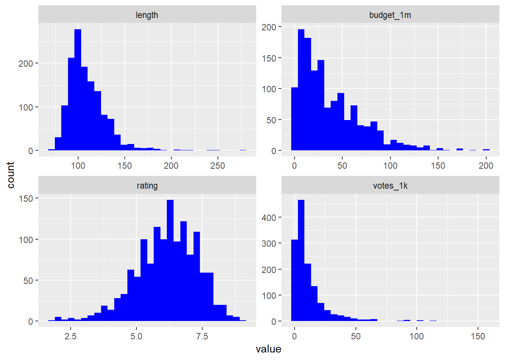
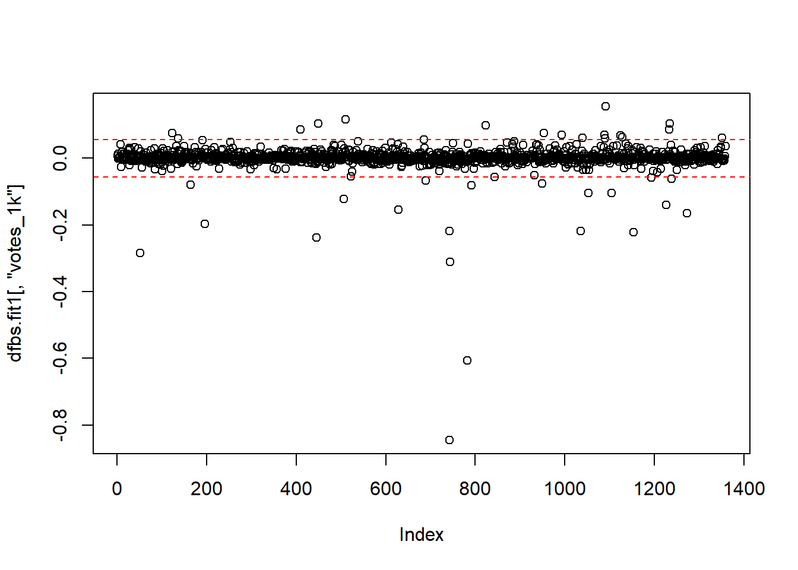
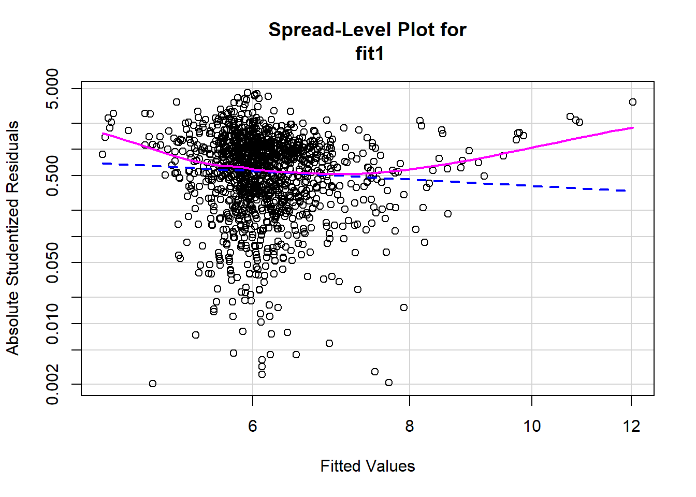
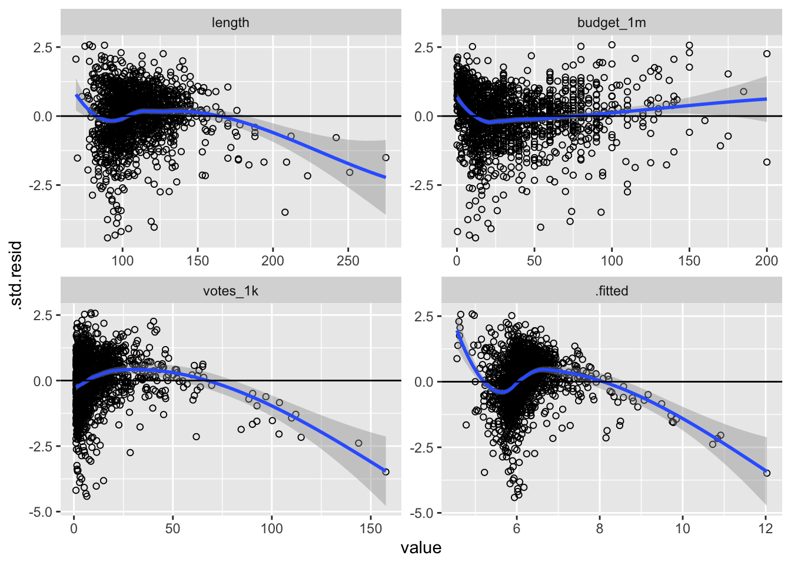
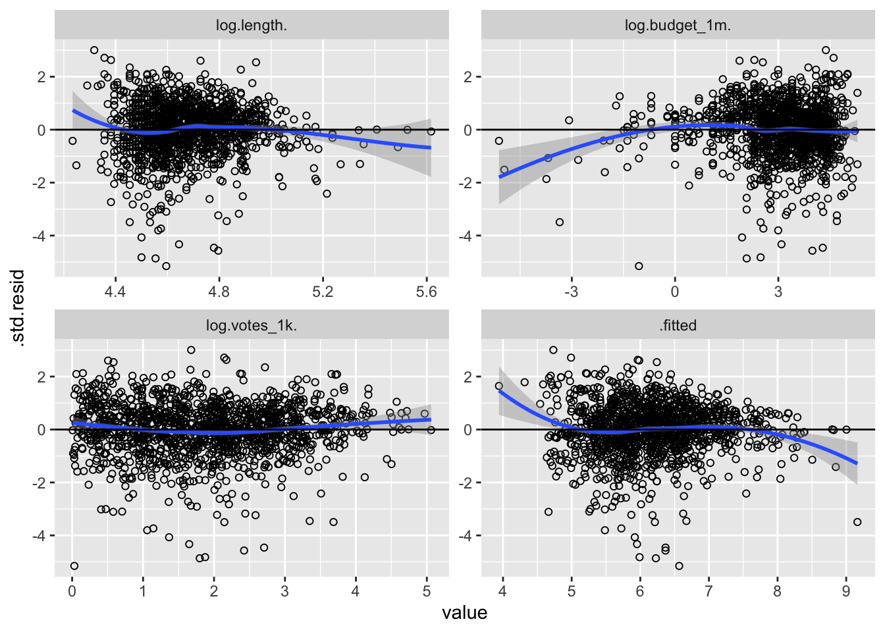
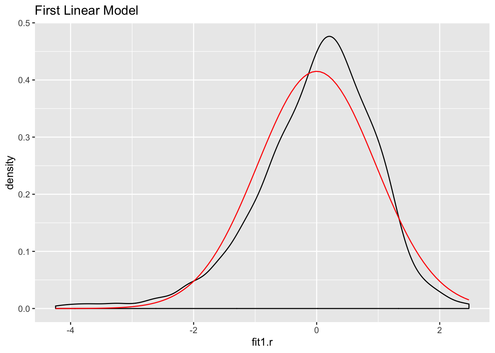
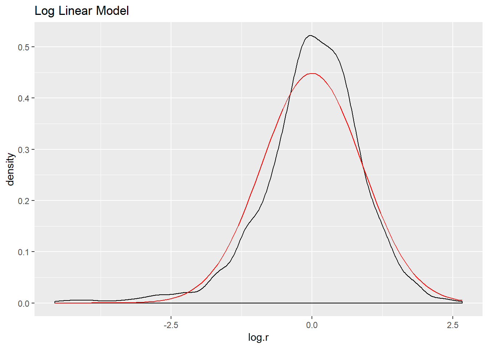
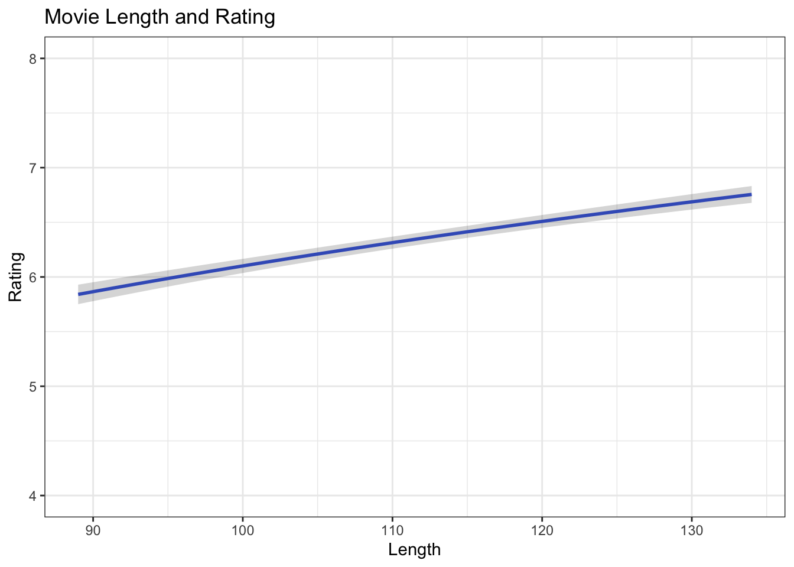
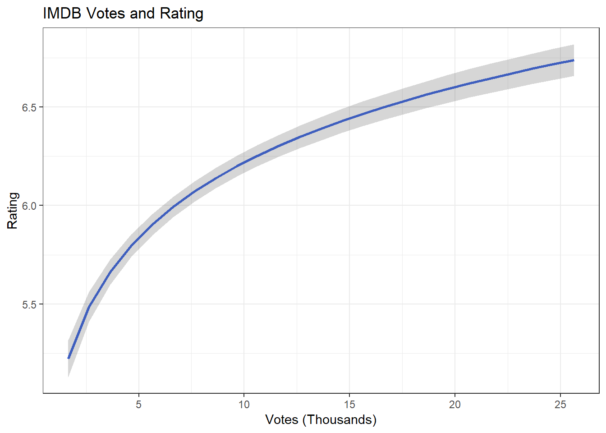
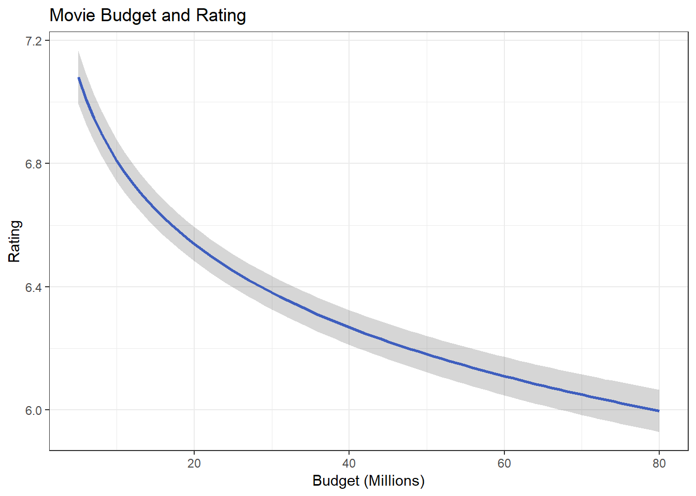

12 Diagnosing and Addressing Problems in Linear Regression
This lab helps us understand how to diagnose and address potential problems in OLS regression. In the last lab, we addressed OLS assumptions of normality of residuals, linearity, and multicollinearity. This lab addresses outliers and heteroscedasticity and also provides a refresher on exploring and visualizing your data. The following packages are required for this lab:
- tidyverse
- psych
- car
- stargazer
- reshape2
- stargazer
- MASS
- plotly
- sandwich
- broom
12.1 Introduction to the Data
For this lab we will use a data set that contains information on movies from the IMDB website. The initial data set contains almost 60,000 observations, so we filter the data to make it a little smaller:
ds <- filter(ds, year>=1995 & votes>1000 & Short!=1) %>% dplyr::select(rating, length, budget,
votes, title, year) %>%
na.omit()Now explore the data. Start with examining the structure of the data set:
str(ds)## Classes 'tbl_df', 'tbl' and 'data.frame': 1359 obs. of 6 variables:
## $ rating: num 6.7 4.7 6.4 6.1 6.1 5.1 5.4 2.5 7.6 8 ...
## $ length: int 97 100 98 102 120 107 101 99 129 124 ...
## $ budget: int 16000000 85000000 37000000 85000000 42000000 76000000 6000000 26000000 12000000 20000000 ...
## $ votes : int 19095 1987 7859 14344 10866 9556 4514 2023 2663 21857 ...
## $ title : chr "10 Things I Hate About You" "102 Dalmatians" "13 Going On 30" "13th Warrior, The" ...
## $ year : int 1999 2000 2004 1999 2001 2003 1999 2000 2004 2003 ...
## - attr(*, "na.action")= 'omit' Named int 1 3 4 6 10 16 17 23 28 30 ...
## ..- attr(*, "names")= chr "1" "3" "4" "6" ...Look at the first five observations in the data set:
head(ds)## # A tibble: 6 x 6
## rating length budget votes title year
## <dbl> <int> <int> <int> <chr> <int>
## 1 6.7 97 16000000 19095 10 Things I Hate About You 1999
## 2 4.7 100 85000000 1987 102 Dalmatians 2000
## 3 6.4 98 37000000 7859 13 Going On 30 2004
## 4 6.1 102 85000000 14344 13th Warrior, The 1999
## 5 6.1 120 42000000 10866 15 Minutes 2001
## 6 5.1 107 76000000 9556 2 Fast 2 Furious 2003To make analysis easier, we can name each row by the title of the movie:
row.names(ds) <- ds$title## Warning: Setting row names on a tibble is deprecated.Now look at the first observations:
head(ds)## # A tibble: 6 x 6
## rating length budget votes title year
## <dbl> <int> <int> <int> <chr> <int>
## 1 6.7 97 16000000 19095 10 Things I Hate About You 1999
## 2 4.7 100 85000000 1987 102 Dalmatians 2000
## 3 6.4 98 37000000 7859 13 Going On 30 2004
## 4 6.1 102 85000000 14344 13th Warrior, The 1999
## 5 6.1 120 42000000 10866 15 Minutes 2001
## 6 5.1 107 76000000 9556 2 Fast 2 Furious 2003Explore some descriptive statistics:
describe(ds)## Warning in describe(ds): NAs introduced by coercion## vars n mean sd median trimmed
## rating 1 1359 6.17 1.16 6.3 6.22
## length 2 1359 109.26 20.54 105.0 107.12
## budget 3 1359 37038211.77 32450599.29 28000000.0 32614123.05
## votes 4 1359 11552.81 15216.95 6728.0 8413.21
## title* 5 1359 1050.00 1408.56 1050.0 1050.00
## year 6 1359 1999.99 2.76 2000.0 2000.04
## mad min max range skew kurtosis se
## rating 1.19 1.7 9 7.3 -0.55 0.53 0.03
## length 17.79 69.0 275 206.0 1.89 7.96 0.56
## budget 26686800.00 6000.0 200000000 199994000.0 1.36 2.15 880264.11
## votes 6594.60 1007.0 157608 156601.0 3.77 20.75 412.78
## title* 1476.67 54.0 2046 1992.0 0.00 -2.75 38.21
## year 2.97 1995.0 2005 10.0 -0.16 -1.02 0.07We will want to start with a clean up a couple variables. First, we can scale the budget variable by millions of dollars, scale votes by thousands, and factor the year variable:
ds %>%
mutate(budget_1m = budget/1000000,
votes_1k = votes/1000,
f.year = factor(year)) -> dsThe next step should be to look at the univariate distributions. Create histograms for the length, budget, user ratings, and votes variables. First you’ll need to melt the data:
melt.ds <- melt(ds, measure.vars = c("length", "budget_1m", "rating", "votes_1k"))
ggplot(melt.ds, aes(value)) +
geom_histogram(fill="#0000FF") +
facet_wrap(~variable, scale="free")## `stat_bin()` using `bins = 30`. Pick better value with `binwidth`.
Now let’s look at the bivariate plots for the relationship between length, budget, votes, and rating. This is where we might find potential outliers. Build each visualization and then use ggplotly() to create an interactive interface that will allow you to identify individual observations.
vote <- ggplot(ds, aes(votes_1k, rating, label = title)) +
geom_point(color = "#0000FF50") +
geom_smooth(method = "loess", se = FALSE, color = "green") +
geom_smooth(method = "lm", se = FALSE, color = "red") +
ggtitle("# of Votes and Rating")
ggplotly(vote)length <- ggplot(ds, aes(length, rating, label = title)) +
geom_point(color = "#0000FF50") +
geom_smooth(method = "loess", se = FALSE, color = "green") +
geom_smooth(method = "lm", se = FALSE, color = "red") +
ggtitle("Length and Rating")
ggplotly(length)budget <- ggplot(ds, aes(budget_1m, rating, label = title)) +
geom_point(color = "#0000FF50") +
geom_smooth(method = "loess", se = FALSE, color = "green") +
geom_smooth(method = "lm", se = FALSE, color = "red") +
ggtitle("Budget and Rating")
ggplotly(budget)12.2 Outliers
The next step is to construct a model:
fit1 <- lm(rating ~ length + budget_1m + votes_1k, data = ds)
stargazer(fit1, type = "text", single.row = TRUE)##
## ===============================================
## Dependent variable:
## ---------------------------
## rating
## -----------------------------------------------
## length 0.016*** (0.001)
## budget_1m -0.010*** (0.001)
## votes_1k 0.033*** (0.002)
## Constant 4.407*** (0.147)
## -----------------------------------------------
## Observations 1,359
## R2 0.312
## Adjusted R2 0.311
## Residual Std. Error 0.962 (df = 1355)
## F Statistic 205.216*** (df = 3; 1355)
## ===============================================
## Note: *p<0.1; **p<0.05; ***p<0.01Normally we are primarily interested in how this model explains our data. For this section, we are more interested in the observations that are not explained by this model. Let’s identify some outliers. First create predicted ratings based on our model:
ds$predicted_rating <- predict(fit1)One simple way to find some possible outliers is to use the outlierTest() function:
outlierTest(fit1)## rstudent unadjusted p-value Bonferonni p
## 476 -4.444751 0.0000095178 0.012935
## 1353 -4.343521 0.0000150670 0.020476
## 1313 -4.212031 0.0000269810 0.036667We see four potential outliers… let’s compare their predicted rating based on their budget, length, and number of votes, to their actual rating:
ds["From Justin to Kelly",c("rating", "predicted_rating")]## # A tibble: 1 x 2
## rating predicted_rating
## <dbl> <dbl>
## 1 NA NAds["You Got Served",c("rating", "predicted_rating")]## # A tibble: 1 x 2
## rating predicted_rating
## <dbl> <dbl>
## 1 NA NAds["Werewolf",c("rating", "predicted_rating")]## # A tibble: 1 x 2
## rating predicted_rating
## <dbl> <dbl>
## 1 NA NAds["Glitter",c("rating", "predicted_rating")]## # A tibble: 1 x 2
## rating predicted_rating
## <dbl> <dbl>
## 1 NA NAWe can see that there is a large discrepancy between these movies’ ratings and their predicted ratings.
There are a variety of ways to visually inspect outliers. Let’s start with an influence plot:
influencePlot(fit1)
## StudRes Hat CookD
## 476 -4.444751 0.001567730 0.007649222
## 742 -3.499031 0.071956182 0.235367503
## 782 -2.391247 0.062564978 0.095075700
## 1091 -1.506006 0.065411451 0.039647906
## 1353 -4.343521 0.001451519 0.006766880An influence plot shows the residuals by their hat-values. This identifies the Matrix and the first Lord of the Rings as potential outliers, so let’s compare their ratings to predicted ratings:
ds["Lord of the Rings: The Fellowship of the Ring, The",c("rating", "predicted_rating")]## # A tibble: 1 x 2
## rating predicted_rating
## <dbl> <dbl>
## 1 NA NAds["Matrix, The",c("rating", "predicted_rating")]## # A tibble: 1 x 2
## rating predicted_rating
## <dbl> <dbl>
## 1 NA NAThese movies are flagged outliers for a different reason than the movies we found earlier. These two movies are rated high, but their predicted ratings are even higher (above the maximum possible value of 10).
Another way to examine outliers is to look at the DFBetas. DFBetas measure the influence of case i on the j estimated coefficients. Put another way, measuring DFBetas asks how many standard errors a particular beta changes when case i is removed. The rule of thumb is if the absolute value of a DFBETA is greater than 2 divided by the square root of n, there could be cause for concern. Let’s calculate that value:
df <- 2/sqrt(1261)
df## [1] 0.05632127We can find the DFBetas easily:
dfbs.fit1 <- dfbetas(fit1)
head(dfbs.fit1)## (Intercept) length budget_1m votes_1k
## 1 0.006806296 -0.005084189 -0.0050276250 0.0070121773
## 2 -0.008979320 0.009910553 -0.0275525338 0.0130756825
## 3 0.010690935 -0.008032946 0.0032307871 -0.0011083722
## 4 0.009230482 -0.010909459 0.0210387730 -0.0003584795
## 5 0.001794457 -0.002610743 -0.0001487667 0.0012840947
## 6 -0.005795187 0.006463715 -0.0220719600 0.0064232528With a large data set, listing every DFBeta value is not efficient. Instead, we should plot the DFBetas with lines at the calculated value. We will use the identify() function to mark specific observations. Each of the coefficients will have its own plot. Note: The windows() (or quartz()) function does not knit with RMarkdown; however, the function is used to build the plot on the screen as you follow along within the RMD document.
windows()## Error in windows(): could not find function "windows"plot(dfbs.fit1[,"length"])
abline(h = c(2/sqrt(1261), -2/sqrt(1261)), lty = 2, col = "red")
identify(dfbs.fit1[,"length"],labels = ds$title)
## integer(0)windows()## Error in windows(): could not find function "windows"plot(dfbs.fit1[,"budget_1m"])
abline(h = c(2/sqrt(1261), -2/sqrt(1261)), lty = 2, col = "red")
identify(dfbs.fit1[,"budget_1m"],labels = ds$title)
## integer(0)windows()## Error in windows(): could not find function "windows"plot(dfbs.fit1[,"votes_1k"])
abline(h = c(2/sqrt(1261), -2/sqrt(1261)), lty = 2, col = "red")
identify(dfbs.fit1[,"votes_1k"],labels = ds$title)
## integer(0)All of the diagnostics so far indicate that there are outliers to address. There are a few ways to deal with this: First, you can keep them in the model. This is a perfectly viable method, especially if you don’t have a technical or theoretical reason to remove them. Another method of dealing with outliers is to omit them and re-run the model. Let’s look at the outliers identified by the outlier test again:
outlierTest(fit1)## rstudent unadjusted p-value Bonferonni p
## 476 -4.444751 0.0000095178 0.012935
## 1353 -4.343521 0.0000150670 0.020476
## 1313 -4.212031 0.0000269810 0.036667Omit these using the following operator. Essentially this tells R not to include the rows with the titles of the outlier movies.
ds.omit <- ds[ !(ds$title %in% c("From Justin to Kelly", "You Got Served", "Werewolf", "Glitter")),]Next make a new model with the ds.omit data:
fit.omit <- lm(rating ~ length + budget_1m + votes_1k, data = ds.omit)Compare the two models side by side:
stargazer(fit1, fit.omit, type = "text", single.row = TRUE)##
## =======================================================================
## Dependent variable:
## ---------------------------------------------------
## rating
## (1) (2)
## -----------------------------------------------------------------------
## length 0.016*** (0.001) 0.016*** (0.001)
## budget_1m -0.010*** (0.001) -0.010*** (0.001)
## votes_1k 0.033*** (0.002) 0.033*** (0.002)
## Constant 4.407*** (0.147) 4.450*** (0.143)
## -----------------------------------------------------------------------
## Observations 1,359 1,355
## R2 0.312 0.322
## Adjusted R2 0.311 0.321
## Residual Std. Error 0.962 (df = 1355) 0.937 (df = 1351)
## F Statistic 205.216*** (df = 3; 1355) 214.265*** (df = 3; 1351)
## =======================================================================
## Note: *p<0.1; **p<0.05; ***p<0.01Notice the minimal changes. The omitted observations changed 3 of the four coefficients, and increased the adjusted R squared value.
Another option when dealing with outliers is to use robust regression, which weights the observations based on influence. Make a new model using robust regression using the rlm() function. There are two methods, “M” and “MM”, and both should be evaluated to determine which model best represents your needs.
fit.m <- rlm(rating ~ length + budget_1m + votes_1k, data = ds, method = "M")
fit.mm <- rlm(rating ~ length + budget_1m + votes_1k, data = ds, method = "MM")Compare the four models:
stargazer(fit1, fit.omit, fit.m, fit.mm, type = "text",single.row = TRUE)##
## ===========================================================================================================
## Dependent variable:
## ---------------------------------------------------------------------------------------
## rating
## OLS robust
## linear
## (1) (2) (3) (4)
## -----------------------------------------------------------------------------------------------------------
## length 0.016*** (0.001) 0.016*** (0.001) 0.017*** (0.001) 0.016*** (0.001)
## budget_1m -0.010*** (0.001) -0.010*** (0.001) -0.011*** (0.001) -0.012*** (0.001)
## votes_1k 0.033*** (0.002) 0.033*** (0.002) 0.035*** (0.002) 0.036*** (0.002)
## Constant 4.407*** (0.147) 4.450*** (0.143) 4.432*** (0.138) 4.472*** (0.138)
## -----------------------------------------------------------------------------------------------------------
## Observations 1,359 1,355 1,359 1,359
## R2 0.312 0.322
## Adjusted R2 0.311 0.321
## Residual Std. Error 0.962 (df = 1355) 0.937 (df = 1351) 0.864 (df = 1355) 0.836 (df = 1355)
## F Statistic 205.216*** (df = 3; 1355) 214.265*** (df = 3; 1351)
## ===========================================================================================================
## Note: *p<0.1; **p<0.05; ***p<0.01The biggest difference here is the residual standard error for the robust models is quite a bit lower. There are also differences in the coefficients. With outliers, there is not a one-size-fits-all solution. Let your theory contribute to what solution you use.
12.3 Heteroscedasticity
One of the key assumptions of OLS is homoscedasticity (constant error variance). One way to check for this is by making a spread level plot, which allows us to see the spread of the residuals:
spreadLevelPlot(fit1)
##
## Suggested power transformation: 1.771347There does not appear to be constant spread of residuals, which could indicate a problem with heteroscedasticity. We can further investigate this by doing a Non-constant Variance Test. This tests the null hypothesis that error variance changes (heteroscedasticity). That is, if you fail to reject the null there exists heteroscedasticity:
ncvTest(fit1)## Non-constant Variance Score Test
## Variance formula: ~ fitted.values
## Chisquare = 3.205979, Df = 1, p = 0.07337Based on the test and visualization, it is clear there is an issue with heteroscedasticity. There are a couple ways to deal with heteroscedasticity. One method is robust standard errors. Robust standard errors don’t change the beta estimates, but rather affect the value of the standard errors, which improve the p-values accuracy. To use robust standard errors for the model:
se.fit1 <- fit1 %>% vcov() %>% diag() %>% sqrt()
vcov.fit1 <- vcovHC(fit1, method = "white1",type = "HC1")
rse.fit1 <- vcov.fit1 %>% diag() %>% sqrt()Now compare the original model to the model using robust standard errors. Use se=list(se.fit1,rse.fit1) for R to use the original standard errors for the first model and robust for the second.
stargazer(fit1, fit1, type = "text", single.row = TRUE, se = list(se.fit1, rse.fit1))##
## ===================================================================
## Dependent variable:
## -----------------------------------
## rating
## (1) (2)
## -------------------------------------------------------------------
## length 0.016*** (0.001) 0.016*** (0.002)
## budget_1m -0.010*** (0.001) -0.010*** (0.001)
## votes_1k 0.033*** (0.002) 0.033*** (0.003)
## Constant 4.407*** (0.147) 4.407*** (0.168)
## -------------------------------------------------------------------
## Observations 1,359 1,359
## R2 0.312 0.312
## Adjusted R2 0.311 0.311
## Residual Std. Error (df = 1355) 0.962 0.962
## F Statistic (df = 3; 1355) 205.216*** 205.216***
## ===================================================================
## Note: *p<0.1; **p<0.05; ***p<0.0112.4 Revisiting Linearity
Let’s revisit addressing the assumption of linearity by constructing the residual plots that we made in the last lab. Recall that these are made by using augment() to predict values and calculate residuals, melt the data into long form and identify the independent variables and fitted values are your measure variables, then pipe it all into ggplot2 and use facet_wrap() to create a visualization for each variable.
fit1 %>%
augment() %>%
melt(measure.vars = c("length", "budget_1m", "votes_1k", ".fitted")) %>%
ggplot(., aes(value, .std.resid)) +
geom_point(shape=1) +
geom_smooth(method = loess) +
geom_hline(yintercept = 0) +
facet_wrap(~variable, scales = "free")
There appears to be a linearity problem. The budget graphics appears to be the most linear, and the others suggest non-linear relationships. Let’s examine some more information about the variables:
describe(ds$length)## vars n mean sd median trimmed mad min max range skew kurtosis
## X1 1 1359 109.26 20.54 105 107.12 17.79 69 275 206 1.89 7.96
## se
## X1 0.56describe(ds$budget_1m)## vars n mean sd median trimmed mad min max range skew
## X1 1 1359 37.04 32.45 28 32.61 26.69 0.01 200 199.99 1.36
## kurtosis se
## X1 2.15 0.88describe(ds$votes_1k)## vars n mean sd median trimmed mad min max range skew
## X1 1 1359 11.55 15.22 6.73 8.41 6.59 1.01 157.61 156.6 3.77
## kurtosis se
## X1 20.75 0.41There is skew for all three variables, so let’s respecify the model by using the log of each variable, then create the same visualization as before:
fit.log <- lm(rating ~ log(length) + log(budget_1m) + log(votes_1k), data = ds)
fit.log %>%
augment() %>%
melt(measure.vars = c("log.length.", "log.budget_1m.", "log.votes_1k.", ".fitted")) %>%
ggplot(., aes(value, .std.resid)) +
geom_point(shape = 1) +
geom_smooth(aes(value, .std.resid), method = "loess") +
geom_hline(yintercept = 0) +
facet_wrap(~variable, scales = "free")
This method fixed some problems and created new ones. The votes graphic suggests a more linear relationship, but problems persist. Perhaps a polynomial model is more appropriate. Let’s square every IV in the next model:
fit.poly <- lm(rating ~ poly(length, 2) + poly(budget_1m, 2) + poly(votes_1k, 2), data = ds)Compare the last three models:
stargazer(fit1, fit.log, fit.poly, single.row = TRUE, type = "text")##
## =================================================================================================
## Dependent variable:
## -----------------------------------------------------------------------------
## rating
## (1) (2) (3)
## -------------------------------------------------------------------------------------------------
## length 0.016*** (0.001)
## budget_1m -0.010*** (0.001)
## votes_1k 0.033*** (0.002)
## log(length) 2.235*** (0.155)
## log(budget_1m) -0.390*** (0.020)
## log(votes_1k) 0.551*** (0.026)
## poly(length, 2)1 12.399*** (1.028)
## poly(length, 2)2 -3.986*** (0.945)
## poly(budget_1m, 2)1 -14.445*** (1.021)
## poly(budget_1m, 2)2 5.735*** (0.917)
## poly(votes_1k, 2)1 19.283*** (1.025)
## poly(votes_1k, 2)2 -8.690*** (0.962)
## Constant 4.407*** (0.147) -4.132*** (0.703) 6.165*** (0.025)
## -------------------------------------------------------------------------------------------------
## Observations 1,359 1,359 1,359
## R2 0.312 0.411 0.383
## Adjusted R2 0.311 0.410 0.381
## Residual Std. Error 0.962 (df = 1355) 0.890 (df = 1355) 0.912 (df = 1352)
## F Statistic 205.216*** (df = 3; 1355) 315.495*** (df = 3; 1355) 140.073*** (df = 6; 1352)
## =================================================================================================
## Note: *p<0.1; **p<0.05; ***p<0.01The log model has the highest adjusted R squared and lowest residual standard error.
12.4.1 Normality
Let’s look at the normality of the residuals for the models:
ds %>%
mutate(fit1.r = residuals(fit1)) ->ds
ggplot(ds,aes(fit1.r)) +
geom_density() +
stat_function(fun = dnorm, args = list(mean = mean(ds$fit1.r),
sd = sd(ds$fit1.r)), color = "red") +
ggtitle("First Linear Model")
ds %>%
mutate(log.r = residuals(fit.log)) -> ds
ggplot(ds, aes(log.r)) +
geom_density() +
stat_function(fun = dnorm, args = list(mean = mean(ds$log.r),
sd = sd(ds$log.r)), color = "red") +
ggtitle("Log Linear Model")
ds %>%
mutate(poly.r = residuals(fit.poly)) -> ds
ggplot(ds, aes(poly.r)) +
geom_density() +
stat_function(fun = dnorm, args = list(mean = mean(ds$poly.r),
sd = sd(ds$poly.r)), color="red") +
ggtitle("Polynomial Model")
The log model has the highest adjusted R squared value, the lowest residual standard error, and its residuals appear to approximate the normal distribution better than the other two models. Let’s use it to make predictions and create visualizations.
First create predicted values for movie ratings by holding all IVs constant at their means except one at at time, using the augment() function. Then use mutate() to calculate the upper and lower bounds of the confidence interval. Create separate data frames for length, budget, and votes.
df.length <- fit.log %>%
augment(newdata = data.frame(length = 89:134,
budget_1m = mean(ds$budget_1m),
votes_1k = mean(ds$votes_1k))) %>%
mutate(upper = .fitted + 1.96 * .se.fit,
lower = .fitted - 1.96 * .se.fit)
df.budget <- fit.log %>%
augment(newdata = data.frame(length = mean(ds$length),
budget_1m = 5:80,
votes_1k = mean(ds$votes_1k))) %>%
mutate(upper = .fitted + 1.96 * .se.fit,
lower = .fitted - 1.96 * .se.fit)
df.votes <- fit.log %>%
augment(newdata = data.frame(length = mean(ds$length),
budget_1m = mean(ds$budget_1m),
votes_1k = 1.645:25.964)) %>%
mutate(upper = .fitted + 1.96 * .se.fit,
lower = .fitted - 1.96 * .se.fit)Now make the visualization for each data frame~
ggplot(df.length, aes(length, .fitted)) +
geom_line(size = 1, color = "royalblue") +
geom_ribbon(aes(ymin = lower, ymax = upper), alpha = .2) +
coord_cartesian(ylim = c(4:8), xlim = c(89:134)) +
ggtitle("Movie Length and Rating") +
xlab("Length") +
ylab("Rating") +
theme_bw()
Now do the same for thse next two IVs:
ggplot(df.votes, aes(votes_1k, .fitted)) +
geom_line(size = 1, color = "royalblue") +
geom_ribbon(aes(ymin = lower, ymax = upper), alpha = .2) +
ggtitle("IMDB Votes and Rating") +
xlab("Votes (Thousands)") +
ylab("Rating") +
theme_bw()
ggplot(df.budget, aes(budget_1m, .fitted)) +
geom_line(size = 1, color = "royalblue") +
geom_ribbon(aes(ymin = lower, ymax = upper), alpha = .2) +
ggtitle("Movie Budget and Rating") +
xlab("Budget (Millions)") +
ylab("Rating") +
theme_bw()